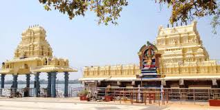

Bhadrakali Temple
Bhadrakali Temple, located in Warangal, Telangana, is dedicated to the Goddess Bhadrakali. The temple is situated on a hilltop and offers a serene environment for worshippers.
Location: Warangal, Telangana, India
Ticket Price: Free entry
Transportation: Accessible by road, well-connected by local buses and taxis.